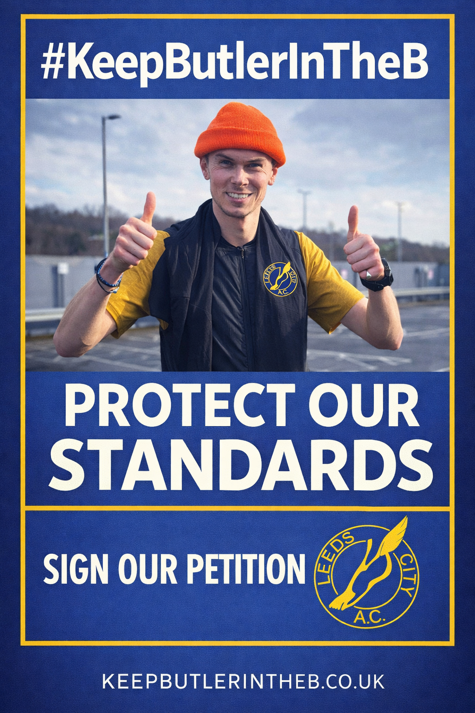

No 15:44 merchants in the A team
Honest grafters, yes. A team standard-setters? Not quite. There's a place for development - it's called the B team.
keepbutlerintheb.com
A campaign for standards, pride, and a bit of self-respect.
There comes a point where a club has to ask itself: what do we stand for? Not just results. Not just participation. But identity.
The A team isn't just a list of names - it's a statement. It's what we put on the line when the gun goes. It's the standard we hold ourselves to when no one's watching.
And right now... that standard is under threat.

The Petition
Leave a name and a comment, hit sign, and we'll thank you for backing the cause. Every signature is a stand for standards. Every comment is a call to action.
Thanks for your signature.
The Case for Standards
This would never have been tolerated in Simon Deakin’s day — lads turning up blasting Cascada off a boombox on a Tuesday session wouldn’t have got anywhere near the A team. Standards mattered. Keep him firmly in the B where he belongs.
Honest grafters, yes. A team standard-setters? Not quite. There's a place for development - it's called the B team.
This isn't a fashion runway. This is racing. Neutral colours, serious intent. If you look like a highlighter pen, you're sending the wrong message before the race even starts.
If it's "a bit wet" and you're indoors watching Netflix miles tick by, you've already removed yourself from A team contention. The A team trains in it, through it, and because of it.
What the A Team Should Be
Not heroic once. Reliable always.
If the standard slips, someone says so.
About standards, specifically.
Rain, mud, pressure, effort. Good.
Why This Matters
Standards are what make the front end of a club feel dangerous. Without them, everyone settles.
Selection should say something. If it says nothing, it is just fabric.
Suddenly, being "in the A team" is just admin. We're not here for that.
Our Position
Keep the standards high. Keep the A team what it's meant to be.
Because if we don't draw the line somewhere... we'll all end up in pink kit on a treadmill wondering where it went wrong.